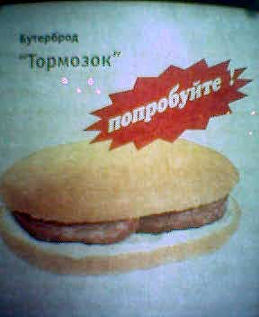

Что ни говори, а страна у нас все-таки большая. Что не вызывает никакого недоумения у большинства жителей Кемерова, то зачастую абсолютно непонятно жителям например Санкт-Петербурга.
Так в выпуске от 16 декабря баннизмов от Алекса Экслера некто Stanislav просто обескуражен названием горячего бутерброда. Бутерброд, продаваемый на самом деле скорее не питерской, а сибирской (с кемеровскими корнями), сетью “Подорожник” называется недвусмысленным словом “Тормозок”.

На самом же деле бутерброд был создан технологами “Подорожника” ко дню шахтера и был назван так по абсолютно понятной причинк. На самом деле тормозок это не небольшой тормоз, это съестная пайка, которую шахтеры берут с собой в забой. Тем не менее промашка маркетологов имеет место быть.